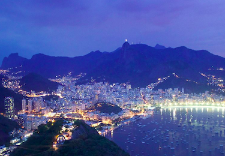
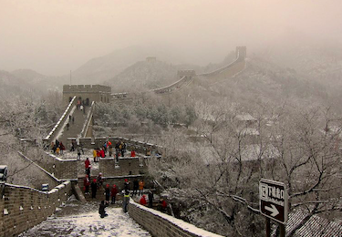
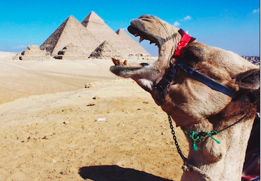
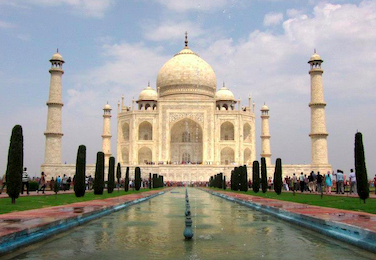
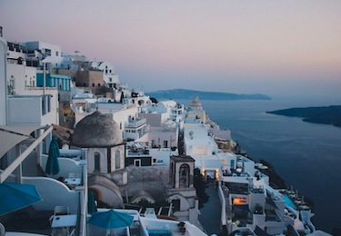

The Journey
Origins
I started traveling from a young age between New York and Greece when school let out for the year.
My mother would send me to stay with my grandmother every single summer, since I did not have much to do at home.
I was too young to appreciate my summers abroad back then, but it really set the stage for the nomadic tendencies
I developed later on in life.
 
In my senior year of high school, my class was informed that our end of year trip had been
cancelled due to lack of funding. One of our teachers created the "International Club" and signed up with EF Tours
to organize a student-funded trip to Italy and France. My best friend and I signed up, begged our parents for the money,
and set our sights internationally. It felt like a lot of freedom for two 16 year olds to have. Our days were
filled with sight-seeing and exploring. We wandered the streets of places like Milan, Florence,
Venice, Pisa, Paris, Nice, and Monaco like we knew where we were going. We were bewildered by it all. It was
such a special gift to get to enjoy that trip together as teenagers who were just getting their first glimpse at the world.

The (Travel) Bug
That first trip to Europe was amazing, but I did feel guilty about making my mom pay for it. I swore that once I got a job that paid better, I would save up and travel once more. Once in college, I got a part time job that was paying me $13 an hour, which seemed like a lot back then. I managed to save enough to finally take a trip to Mexico in my third year. That trip was incredible. I snorkeled, I swam with dolphins, and I had shrimp tacos that were so spicy, they permanently damaged my taste buds (worth it.).
From then on, my only goal became: save enough to travel, then go! Since then, I have traveled all over North America, South America, Europe, and Asia. With every trip, I learned a little more about being a savvy and budget-conscious traveler. I became a better planner, more proficient with navigating, and getting lost, over time, stopped being terrifying and started becoming an adventure.
